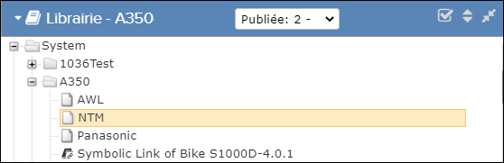

La possibilité de créer un lien symbolique vers une publication est disponible dans le
Data Manager. Cette fonctionnalité vous permet de créer un lien symbolique vers des
publications d'une autre bibliothèque. Reportez-vous à la section "Création d'un lien
symbolique" dans la rubrique "Panneau de publication" dans Flatirons Data Manager User
Guide.
Lorsque vous sélectionnez la publication, la Table des Matières apparaît pour la publication originale (cible). Les métadonnées de la publication du lien symbolique, telles que le numéro de révision, le statut de la publication, la date de publication, etc., concernent également la publication d'origine. Comme d'autres publications, vous pouvez ouvrir une publication de lien symbolique à partir de divers endroits dans Pinpoint. Vous pouvez également effectuer des recherches sur la publication.
Remarque : Vous pouvez créer un lien symbolique dans Pinpoint Standalone uniquement si
le composant Data Manager est disponible dans votre environnement. Ceci ne s'applique pas à
Pinpoint Standalone Light.
Remarque : Pour télécharger avec succès la publication du lien
symbolique via le processus de synchronisation automatique/synchronisation manuelle dans un
package autonome, vous devez d'abord télécharger la publication cible (source) qui lui est
liée.
Une fois le lien symbolique créé, la publication liée est disponible dans
Pinpoint. L'icône  de lien symbolique à gauche du nom de la
publication l'identifie comme une publication de lien symbolique. Par example:
de lien symbolique à gauche du nom de la
publication l'identifie comme une publication de lien symbolique. Par example:

Lorsque vous sélectionnez la publication, la Table des Matières apparaît pour la publication originale (cible). Les métadonnées de la publication du lien symbolique, telles que le numéro de révision, le statut de la publication, la date de publication, etc., concernent également la publication d'origine. Comme d'autres publications, vous pouvez ouvrir une publication de lien symbolique à partir de divers endroits dans Pinpoint. Vous pouvez également effectuer des recherches sur la publication.
Ouverture d'une publication de lien symbolique
Vous pouvez ouvrir une publication de lien symbolique en sélectionnant la publication ou un
lien vers la publication. La publication qui s'affiche est toujours la publication
d'origine. Vous pouvez ouvrir la publication du lien symbolique depuis:
- Table des Matières
- Référence de document
- ALLER À L'URL
- Signet
- Histoire
- Recherche en texte intégral
- Recherche attachements
- Recherche d'annotations
Recherche sur une publication de lien symbolique
Vous pouvez effectuer une Recherche en texte intégral, une Recherche
d'annotations et une Recherche de pièces jointes sur les publications de liens symboliques.
La recherche est effectuée sur les données de la publication originale.
- Recherche en texte intégral: Faire référence à Effectuer une recherche de texte intégral.
- Recherche attachements: Faire référence à Rechercher des Attachements.
- Recherche d'annotations: Faire référence à Rechercher des annotations.
Restrictions pour les publications de liens symboliques
Vous ne pouvez pas effectuer les actions répertoriées ci-dessous sur les publications de
liens symboliques. Vous pouvez effectuer ces actions sur la publication d'origine et l'effet
est visible à la fois dans la publication d'origine et dans les publications de lien
symbolique.
- Libération/annulation
- Ajouter annotations
- Ajouter attachements
- Contenu de l'auteur
- Configurer une page de destination